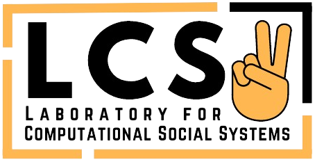

About
Awards
Publications
Students
Activities
Talks
Teaching
Media
Contact



Publications
2024
- Tanmoy Chakraborty, Sarah Masud, The Promethean Dilemma of AI at the Intersection of Hallucination and Creativity, Communications of the ACM, 2024.
- Ayan Sengupta, Shantanu Dixit, Md Shad Akhtar, Tanmoy Chakraborty, A Good Learner can Teach Better: Teacher-Student Collaborative Knowledge Distillation, ICLR, 2024.
- Subhabrata Dutta, Ishan Pandey, Joykirat Singh, Sunny Manchanda, Soumen Chakrabarti, Tanmoy Chakraborty, Frugal LMs Trained to Invoke Symbolic Solvers Achieve Parameter-Efficient Arithmetic Reasoning, AAAI, 2024.
- Shivani Kumar, Rishabh Gupta, Md. Shad Akhtar, Tanmoy Chakraborty, Adding SPICE to Life: Speaker Profiling in Multiparty Conversations, LREC-COLING, 2024.
- Kartik Kartik, Sanjana Soni, Anoop Kunchukuttan, Tanmoy Chakraborty, Md. Shad Akhtar, Synthetic Data Generation and Joint Learning for Robust Code-Mixed Translation, LREC-COLING, 2024.
- Shivani Kumar, Tanmoy Chakraborty, Harmonizing Code-mixed Conversations: Personality-assisted Code-mixed Response Generation in Dialogues, EACL (Findings), 2024.
- Sarah Masud, Mohammad Aflah Khan, Vikram Goyal, Md Shad Akhtar, Tanmoy Chakraborty, Probing Critical Learning Dynamics of LLMs for Hate Speech Detection, EACL (Findings), 2024.
- Tharun Suresh, Ayan Sengupta, Md Shad Akhtar, Tanmoy Chakraborty, A Comprehensive Understanding of Code-mixed Language Semantics using Hierarchical Transformer, IEEE Transactions on Computational Social Systems, 2024.
2023
- Tanmoy Chakraborty, Sarah Masud. Judging the creative prowess of AI, Nature Machine Intelligence, 2023.
- Subhabrata Dutta, Tanmoy Chakraborty, Thus spake ChatGPT: On the reliability of AI-based chatbots for science communication, Communications of the ACM, 2023.
- Gurusha Juneja, Subhabrata Dutta, Soumen Chakrabarti, Sunny Manchanda, Tanmoy Chakraborty, Small Language Models Fine-tuned to Coordinate Larger Language Models Improve Complex Reasoning, EMNLP, 2023.
- Shivani Kumar, Ramaneswaran S, Md Shad Akhtar, Tanmoy Chakraborty, From Multilingual Complexity to Emotional Clarity: Leveraging Commonsense to Unveil Emotions in Code-Mixed Dialogues, EMNLP, 2023.
- Yash Kumar Atri, Arun Iyer, Tanmoy Chakraborty, Vikram Goyal, Promoting Topic Coherence and Inter-Document Consorts in Multi-Document Summarization via Simplicial Complex and Sheaf Graph, EMNLP, 2023.
- Ayan Sengupta, Md Shad Akhtar, Tanmoy Chakraborty, Manifold-Preserving Transformers are Effective for Short-Long Range Encoding, EMNLP (Findings), 2023.
- Rahul Vansh, Darsh Rank, Sourish Dasgupta, Tanmoy Chakraborty, Accuracy is not enough: Evaluating Personalization in Summarizers, EMNLP (Findings), 2023.
- Megha Sundriyal, Tanmoy Chakraborty, Preslav Nakov, From Chaos to Clarity: Claim Normalization to Empower Fact-Checking, EMNLP (Findings), 2023.
- Udit Narang, Kushal Juneja, Pankaj Upadhyaya, Popat Salunke, Tanmoy Chakraborty, Swadhin Kumar Behera, Saroj Kanta Mishra, Akhil Dev Suresh, Artificial intelligence predicts normal summer monsoon rainfall for India in 2023, Scientific Reports, 2023.
- Yash Atri, Vikram Goyal, Tanmoy Chakraborty, Multi-Document Summarization Using Selective Attention Span and Reinforcement Learning, IEEE Transactions on Audio, Speech and Language Processing, 2023.
- Yash Kumar Atri, Vikram Goyal, Tanmoy Chakraborty. Fusing Multimodal Signals on Hyper-complex Space for Extreme Abstractive Text Summarization (TL;DR) of Scientific Contents, SIGKDD, 2023.
- Atharva Kulkarni, Sarah Masud, Vikram Goyal, Tanmoy Chakraborty. Revisiting Hate Speech Benchmarks: From Data Curation to System Deployment, SIGKDD, 2023.
- Eshaan Tanwar, Subhabrata Dutta, Manish Borthakur, Tanmoy Chakraborty. Multilingual LLMs are Better Cross-lingual In-context Learners with Alignment, ACL, 2023. (ACL'23 Outstanding Paper Award)
- Shaily Desai, Rishabh Gupta, Manvi Goel, Anil Bandhakavi, Md Shad Akhtar, Tanmoy Chakraborty. Counterspeeches up my sleeve! Intent Distribution Learning and Persistent Fusion for Intent-Conditioned Counterspeech Generation, ACL, 2023.
- Shivam Sharma, Ramaneswaran S, Udit Arora, Md. Shad Akhtar, Tanmoy Chakraborty. MEMEX: Detecting Explanatory Evidence for Memes via Knowledge-Enriched Contextualization, ACL, 2023.
- Vasu Goela, Dhruv Sahnana, Subhabrata Dutta, Anil Bandhakavic, Tanmoy Chakraborty. Hatemongers ride on echo chambers to escalate hate speech diffusion, PNAS Nexus, 2023.
- Atharva Kulkarni, Raya Das, Ravi S. Srivastava, Tanmoy Chakraborty, Learning and Reasoning Multifaceted and Longitudinal Data for Poverty Estimates and Livelihood Capabilities of Lagged Regions in Rural India, IJCAI, 2023. (AI for Social Good Track) (AI and Social Good IJCAI'23 Award)
- Aseem Srivastava, Ishan Pandey, Md Shad Akhtar, Tanmoy Chakraborty. Response-act Guided Reinforced Dialogue Generation for Mental Health Counseling, The WebConf, 2023.
- Tanmay Garg, Sarah Masud, Tharun Suresh, Tanmoy Chakraborty. Handling Bias in Toxic Speech Detection: A Survey, ACM Computing Surveys, 2023.
- Shivam Sharma, Siddhant Agarwal, Tharun Suresh, Preslav Nakov, Md. Shad Akhtar, Tanmoy Chakraborty. What do you MEME? Generating Explanations for Visual Semantic Role Labelling in Memes, AAAI, 2023.
- Shivani Kumar, Ishani Mondal, Md Shad Akhtar, Tanmoy Chakraborty. Explaining (Sarcastic) Utterances to Enhance Affect Understanding in Multimodal Dialogues, AAAI, 2023.
- Tanmoy Chakraborty, Valerio La Gatta, Vincenzo Moscato, Giancarlo Sperli, Information retrieval algorithms and neural ranking models to detect previously fact-checked information, Neurocomputing, 2023.
- Sarah Masud, Tanmoy Chakraborty. Political mud slandering and power dynamics during Indian assembly elections, Social Network Analysis and Mining, 2023.
- Qing Meng, Tharun Suresh, Roy Ka-Wei Lee, Tanmoy Chakraborty. Predicting Hate Intensity of Twitter Conversation Threads, Knowledge-Based Systems, 2023.
- Ansh Kumar Sharma, Rahul Kukreja, Mayank Kharbanda, Tanmoy Chakraborty. Node Injection for Class-specific Network Poisoning, Neural Networks , 2023.
- Shivani Kumar, Shubham Dudeja, Md Shad Akhtar, Tanmoy Chakraborty. Emotion Flip Reasoning in Multiparty Conversations, IEEE Transactions on Artificial Intelligence, 2023.
- Md Rabiul Awal, Roy Ka-Wei Lee, Eshaan Tanwar, Tanmay Garg, Tanmoy Chakraborty. Model-Agnostic Meta-Learning for Multilingual Hate Speech Detection, IEEE Transactions on computational social systems, 2023.
- Mohit Bhardwaj, Megha Sundriyal, Manjot Bedi, Md Shad Akhtar, Tanmoy Chakraborty. HostileNet: Multi-Label Hostile Post Detection in Hindi, IEEE Transactions on computational social systems, 2023.
- Priyanshi Gupta, Yash Kumar Atri, Apurva Nagvenkar, Sourish Dasgupta, Tanmoy Chakraborty. Inline Citation Classification using Peripheral Context and Time-evolving Augmentation, PAKDD, 2023.
- Shivam Sharma, Atharva Kulkarni, Tharun Suresh, Himanshi Mathur, Preslav Nakov, Md. Shad Akhtar, Tanmoy Chakraborty. Characterizing the Entities in Harmful Memes: Who is the Hero, the Villain, the Victim? EACL, 2023.
- Tanmoy Chakraborty, Sarah Masud. Judging the creative prowess of AI, Nature Machine Intelligence, 2023.
- Subhabrata Dutta, Tanmoy Chakraborty, Thus spake ChatGPT: On the reliability of AI-based chatbots for science communication, Communications of the ACM, 2023.
- Gurusha Juneja, Subhabrata Dutta, Soumen Chakrabarti, Sunny Manchanda, Tanmoy Chakraborty, Small Language Models Fine-tuned to Coordinate Larger Language Models Improve Complex Reasoning, EMNLP, 2023.
- Shivani Kumar, Ramaneswaran S, Md Shad Akhtar, Tanmoy Chakraborty, From Multilingual Complexity to Emotional Clarity: Leveraging Commonsense to Unveil Emotions in Code-Mixed Dialogues, EMNLP, 2023.
- Yash Kumar Atri, Arun Iyer, Tanmoy Chakraborty, Vikram Goyal, Promoting Topic Coherence and Inter-Document Consorts in Multi-Document Summarization via Simplicial Complex and Sheaf Graph, EMNLP, 2023.
- Ayan Sengupta, Md Shad Akhtar, Tanmoy Chakraborty, Manifold-Preserving Transformers are Effective for Short-Long Range Encoding, EMNLP (Findings), 2023.
- Rahul Vansh, Darsh Rank, Sourish Dasgupta, Tanmoy Chakraborty, Accuracy is not enough: Evaluating Personalization in Summarizers, EMNLP (Findings), 2023.
- Megha Sundriyal, Tanmoy Chakraborty, Preslav Nakov, From Chaos to Clarity: Claim Normalization to Empower Fact-Checking, EMNLP (Findings), 2023.
- Udit Narang, Kushal Juneja, Pankaj Upadhyaya, Popat Salunke, Tanmoy Chakraborty, Swadhin Kumar Behera, Saroj Kanta Mishra, Akhil Dev Suresh, Artificial intelligence predicts normal summer monsoon rainfall for India in 2023, Scientific Reports, 2023.
- Yash Atri, Vikram Goyal, Tanmoy Chakraborty, Multi-Document Summarization Using Selective Attention Span and Reinforcement Learning, IEEE Transactions on Audio, Speech and Language Processing, 2023.
- Yash Kumar Atri, Vikram Goyal, Tanmoy Chakraborty. Fusing Multimodal Signals on Hyper-complex Space for Extreme Abstractive Text Summarization (TL;DR) of Scientific Contents, SIGKDD , 2023.
- Atharva Kulkarni, Sarah Masud, Vikram Goyal, Tanmoy Chakraborty. Revisiting Hate Speech Benchmarks: From Data Curation to System Deployment, SIGKDD, 2023.
- Eshaan Tanwar, Subhabrata Dutta, Manish Borthakur, Tanmoy Chakraborty. Multilingual LLMs are Better Cross-lingual In-context Learners with Alignment, ACL, 2023. (ACL'23 Outstanding Paper Award)
- Shaily Desai, Rishabh Gupta, Manvi Goel, Anil Bandhakavi, Md Shad Akhtar, Tanmoy Chakraborty. Counterspeeches up my sleeve! Intent Distribution Learning and Persistent Fusion for Intent-Conditioned Counterspeech Generation, ACL, 2023.
- Shivam Sharma, Ramaneswaran S, Udit Arora, Md. Shad Akhtar, Tanmoy Chakraborty. MEMEX: Detecting Explanatory Evidence for Memes via Knowledge-Enriched Contextualization, ACL, 2023.
- Vasu Goela, Dhruv Sahnana, Subhabrata Dutta, Anil Bandhakavic, Tanmoy Chakraborty. Hatemongers ride on echo chambers to escalate hate speech diffusion, PNAS Nexus, 2023.
- Atharva Kulkarni, Raya Das, Ravi S. Srivastava, Tanmoy Chakraborty, Learning and Reasoning Multifaceted and Longitudinal Data for Poverty Estimates and Livelihood Capabilities of Lagged Regions in Rural India, IJCAI, 2023. (AI for Social Good Track) (AI and Social Good IJCAI'23 Award)
- Aseem Srivastava, Ishan Pandey, Md Shad Akhtar, Tanmoy Chakraborty. Response-act Guided Reinforced Dialogue Generation for Mental Health Counseling, The WebConf, 2023.
- Tanmay Garg, Sarah Masud, Tharun Suresh, Tanmoy Chakraborty. Handling Bias in Toxic Speech Detection: A Survey, ACM Computing Surveys, 2023.
- Shivam Sharma, Siddhant Agarwal, Tharun Suresh, Preslav Nakov, Md. Shad Akhtar, Tanmoy Chakraborty. What do you MEME? Generating Explanations for Visual Semantic Role Labelling in Memes, AAAI, 2023.
- Shivani Kumar, Ishani Mondal, Md Shad Akhtar, Tanmoy Chakraborty. Explaining (Sarcastic) Utterances to Enhance Affect Understanding in Multimodal Dialogues, AAAI, 2023.
- Tanmoy Chakraborty, Valerio La Gatta, Vincenzo Moscato, Giancarlo Sperli, Information retrieval algorithms and neural ranking models to detect previously fact-checked information, Neurocomputing, 2023.
- Sarah Masud, Tanmoy Chakraborty. Political mud slandering and power dynamics during Indian assembly elections, Social Network Analysis and Mining, 2023.
- Qing Meng, Tharun Suresh, Roy Ka-Wei Lee, Tanmoy Chakraborty. Predicting Hate Intensity of Twitter Conversation Threads, Knowledge-Based Systems, 2023.
- Ansh Kumar Sharma, Rahul Kukreja, Mayank Kharbanda, Tanmoy Chakraborty. Node Injection for Class-specific Network Poisoning, Neural Networks , 2023.
- Shivani Kumar, Shubham Dudeja, Md Shad Akhtar, Tanmoy Chakraborty. Emotion Flip Reasoning in Multiparty Conversations, IEEE Transactions on Artificial Intelligence, 2023.
- Md Rabiul Awal, Roy Ka-Wei Lee, Eshaan Tanwar, Tanmay Garg, Tanmoy Chakraborty. Model-Agnostic Meta-Learning for Multilingual Hate Speech Detection, IEEE Transactions on computational social systems, 2023.
- Mohit Bhardwaj, Megha Sundriyal, Manjot Bedi, Md Shad Akhtar, Tanmoy Chakraborty. HostileNet: Multi-Label Hostile Post Detection in Hindi, IEEE Transactions on computational social systems, 2023.
- Priyanshi Gupta, Yash Kumar Atri, Apurva Nagvenkar, Sourish Dasgupta, Tanmoy Chakraborty. Inline Citation Classification using Peripheral Context and Time-evolving Augmentation, PAKDD, 2023.
- Shivam Sharma, Atharva Kulkarni, Tharun Suresh, Himanshi Mathur, Preslav Nakov, Md. Shad Akhtar, Tanmoy Chakraborty. Characterizing the Entities in Harmful Memes: Who is the Hero, the Villain, the Victim? EACL, 2023.
2022
- Megha Sundriyal, Atharva Kulkarni, Vaibhav Pulastya, Md. Shad Akhtar and Tanmoy Chakraborty. Empowering the Fact-checkers! Automatic Identification of Claim Spans on Twitter, EMNLP, 2022.
- Shivam Sharma, Mohd Khizir Siddiqui, Md. Shad Akhtar, Tanmoy Chakraborty. Domain-aware Self-supervised Pre-training for Label-Efficient Meme Analysis, AACL-IJCNLP, 2022.
- Karish Grover, S M Phaneendra Angara, Md Shad Akhtar, Tanmoy Chakraborty, Public Wisdom Matters! Discourse-Aware Hyperbolic Fourier Co-Attention for Social Text Classification, NeurIPS, 2022. (Oral/Spotlight)
- Firoj Alam, Stefano Cresci, Tanmoy Chakraborty, Fabrizio Silvestri, Dimiter Dimitrov, Giovanni Da San Martino, Shaden Shaar, Hamed Firooz, Preslav Nakov. A Survey on Multimodal Disinformation Detection, COLING, 2022.
- Dhruv Sahnan, Vasu Goel, Sarah Masud, Chhavi Jain, Vikram Goyal, Tanmoy Chakraborty. DiVA: A Scalable, Interactive and Customizable Visual Analytics Platform for Information Diffusion on Large Networks, ACM Transactions on Knowledge Discovery from Data (TKDD), 2022.
- Sarah Masud, Manjot Bedi, Mohammad Aflah Khan, Md Shad Akhtar, Tanmoy Chakraborty. Proactively Reducing the Hate Intensity of Online Posts via Hate Speech Normalization, SIGKDD, 2022.
- Aseem Srivastava, Tharun Suresh, Sarah Lord, Md Shad Akhtar, Tanmoy Chakraborty. Counseling Summarization using Mental Health Knowledge Guided Utterance Filtering, SIGKDD, 2022.
- Subhabrata Dutta, Shravika Mittal, Dipankar Das, Soumen Chakrabarti, Tanmoy Chakraborty. Incomplete Gamma Integrals for Deep Cascade Prediction using Content, Network, and Exogenous Signals, IEEE Transactions on Knowledge and Data Engineering (TKDE), 2022.
- Aman Roy, Shravika Mittal, Tanmoy Chakraborty. MG2Vec+: A Multi-headed Graph Attention Network for Multigraph Embedding, Knowledge and Information Systems, 2022.
- Shivam Sharma, Firoj Alam, Md. Shad Akhtar, Dimitar Dimitrov, Giovanni Da San Martino, Hamed Firooz, Alon Halevy, Fabrizio Silvestri, Preslav Nakov, Tanmoy Chakraborty. Detecting and Understanding Harmful Memes: A Survey, IJCAI (Survey Track), 2022.
- Shivam Sharma, Md Shad Akhtar, Preslav Nakov, Tanmoy Chakraborty. DISARM: Detecting the Victims Targeted by Harmful Memes, NAACL (Findings), 2022.
- Anubha Gupta, Sachin Motwani, Abhishek Agarwal, Vishaal Udandarao, Tanmoy Chakraborty. Changing Landscape of Technical Education Pedagogy from Traditional to Practical e-Learning, IEEE Computer , 2022.
- Tanmoy Chakraborty, Sarah Masud. Nipping in the bud: detection, diffusion and mitigation of hate speech on social media. SIGWEB Newsletter, Article 3, pp. 1-9, 2022. (Invited paper)
- Usha Lokala, Aseem Srivastava, Triyasha Ghosh Dastidar, Tanmoy Chakraborty, Md. Shad Akhtar, Maryam Panahiazar, Amit Sheth. A Computational Approach to Understand Mental Health from Reddit: Knowledge-aware Multitask Learning Framework, ICWSM, 2022.
- Shivani Kumar, Atharva Kulkarni, Md Shad Akhtar, Tanmoy Chakraborty. When did you become so smart, oh wise one?! Sarcasm Explanation in Multi-modal Multi-party Dialogues, ACL, 2022.
- Subhabrata Dutta, Jeevesh Juneja, Dipankar Das, Tanmoy Chakraborty. Can Unsupervised Knowledge Transfer from Social Discussions Help Argument Mining? ACL, 2022.
- Dhananjay Kumar Singha, Subrata Nandia, Tanmoy Chakraborty, Prasenjit Choudhury. Disintegrating constant communities in complex networks, Journal of Computational Science, 2022.
- Hridoy Dutta, Tanmoy Chakraborty. Blackmarket-driven Collusion on Online Media: A Survey, ACM/IMS Transactions on Data Science, 2022.
- Kaiqiang Yu, Cheng Long, Deepak P, Tanmoy Chakraborty. On Efficient Large Maximal Biplex Discovery (Extended abstract), ICDE, 2022. (Poster)
- Priya Mehta, Meet Maheshwari, Brihi Joshi, Tanmoy Chakraborty. BaDumTss: Multi-task Learning for Beatbox Transcription, PAKDD, 2022.
- Siddharth Sadhwani, Nishant Grover, Md Shad Akhtar, Tanmoy Chakraborty. Detecting Anchors' Opinion in Hinghlish News Delivery, PAKDD, 2022.
- Shivani Kumar, Anubhav Shrimal, Md Shad Akhtar, Tanmoy Chakraborty. Discovering Emotion and Reasoning its Flip in Multi-Party Conversations using Masked Memory Network and Transformer, Knowledge-Based Systems, 2022.
- Poorav Desai, Tanmoy Chakraborty, Md Shad Akhtar. Nice perfume. How long did you marinate in it? Multimodal Sarcasm Explanation, AAAI, 2022.
- Manjot Bedi, Tanisha Pandey, Sumit Bhatia, Tanmoy Chakraborty. Why Did You Not Compare With That? Finding Papers for Use as Baseline, 44th European Conference on Information Retrieval (ECIR), 2022.
- Ayan Sengupta, Sourabh Kumar Bhattacharjee, Md Shad Akhtar, Tanmoy Chakraborty. Does Aggression Lead to Hate? Detecting and Reasoning Offensive Traits in Hinglish Code-Mixed Texts, Neurocomputing, 2022.
- Hridoy Dutta, Nirav Diwan, Tanmoy Chakraborty. Weakening the Inner Strength: Spotting Core Collusive Users in YouTube Blackmarket Network, International AAAI Conference on Web and Social Media (ICWSM), 2022.
- Subhabrata Dutta, Samiya Caur, Soumen Chakrabarti, Tanmoy Chakraborty. Semi-supervised Stance Detection of Tweets Via Distant Network Supervision, WSDM, 2022.
- Ganeshan Malhotra, Abdul Waheed, Aseem Srivastava, Md Shad Akhtar, Tanmoy Chakraborty. Speaker and Time-aware Joint Contextual Learning for Dialogue-act Classification in Counselling Conversations, WSDM, 2022.
2021
- Subhabrata Dutta, Tanya Gautam, Soumen Chakrabarti, Tanmoy Chakraborty. Redesigning the Transformer Architecture with Insights from Multi-particle Dynamical Systems, NeurIPS, 2021. (Spotlight paper)
- Vaibhav Pulastya, Gaurav Nuti, Yash Kumar Atri and Tanmoy Chakraborty. Assessing the Quality of the Datasets by Identifying Mislabeled Samples, ASONAM, 2021.
- Debajyoti Bera, Rameshwar Pratap, Bhisham Dev Verma, Biswadeep Sen, Tanmoy Chakraborty. QUINT: Node embedding using network hashing, IEEE Transactions on Knowledge and Data Engineering (TKDE), 2021.
- Shravika Mittal, Tanmoy Chakraborty, Siddharth Pal. Dynamics of node influence in network growth models, Physica A: Statistical Mechanics and its Applications, 2021.
- Dhruv Sahnan, Snehil Dahiya, Vasu Goel, Anil Bandhakavi, Tanmoy Chakraborty. Better Prevent than React: Deep Stratified Learning to Predict Hate Intensity of Twitter Reply Chains, 21st IEEE International Conference on Data Mining (ICDM), 2021.
- Shraman Pramanick, Shivam Sharma, Dimitar Dimitrov, Md. Shad Akhtar, Preslav Nakov, Tanmoy Chakraborty. MOMENTA: A Multimodal Framework for Detecting Harmful Memes and Their Targets, Empirical Methods in Natural Language Processing (EMNLP) (Findings), 2021.
- Megha Sundriyal, Parantak Singh, Md. Shad Akhtar, Shubhashis Sengupta, Tanmoy Chakraborty. DESYR: Definition and Syntactic Representation Based Claim Detection on the Web, 30th ACM International Conference on Information and Knowledge Management (CIKM), 2021.
- Hridoy Sankar Dutta, Mayank Jobanputra, Himani Negi, Tanmoy Chakraborty. Detecting and analyzing collusive entities on YouTube, ACM Transactions on Intelligent Systems and Technology (TIST), 2021.
- Hridoy Sankar Dutta, Kartik Aggarwal, Tanmoy Chakraborty. DECIFE: Detecting Collusive Users Involved in Blackmarket Following Services on Twitter, ACM Hypertext, 2021.
- Siddharth Bhatia, Yiwei Wang, Bryan Hooi, Tanmoy Chakraborty. GraphAnoGAN: Detecting Anomalous Snapshots from Attributed Graphs, ECML-PKDD, 2021.
- Shivani Kumar, Manjot Bedi, Md Shad Akhtar, Tanmoy Chakraborty. Multi-modal Sarcasm Detection and Humor Classification in Code-mixed Conversations, IEEE Transactions on Affective Computing, 2021.
- Snehil Dahiya, Shalini Sharma, Dhruv Sahnan, Vasu Goel, Emilie Chouzenoux, Víctor Elvira, Angshul Majumdar, Anil Bandhakavi, Tanmoy Chakraborty. Would your tweet invoke hate on the fly? Forecasting hate intensity of reply threads on Twitter, ACM SIGKDD Conference on Knowledge Discovery and Data Mining (SIGKDD), 2021.
- Yash Kumar Atri, Shraman Pramanick, Vikram Goyal, Tanmoy Chakraborty. See, Hear, Read: Leveraging Multimodality with Guided Attention for Abstractive Text Summarization, Knowledge-Based Systems, 2021.
- Nirav Diwan, Tanmoy Chakraborty, Zubair Shafiq. Fingerprinting Fine-tuned Language Models in the Wild, 59th Annual Meeting of the Association for Computational Linguistics (ACL) (Findings), 2021.
- Ayan Sengupta, Sourabh Kumar Bhattacharjee, Tanmoy Chakraborty, Md. Shad Akhtar. HIT - A Hierarchically Fused Deep Attention Network for Robust Code-mixed Language Representation, 59th Annual Meeting of the Association for Computational Linguistics (ACL) (Findings), 2021.
- Shraman Pramanick, Dimitar Dimitrov, Rituparna Mukherjee, Shivam Sharma, Md. Shad Akhtar, Preslav Nakov, Tanmoy Chakraborty. Detecting Harmful Memes and Their Targets, 59th Annual Meeting of the Association for Computational Linguistics (ACL) (Findings), 2021.
- Kaiqiang Yu, Cheng Long, Deepak P, Tanmoy Chakraborty. On Efficient Large Maximal Biplex Discovery, IEEE Transactions on Knowledge and Data Engineering (TKDE), 2021.
- Suraj Pandey, Md Shad Akhtar, Tanmoy Chakraborty. Syntactically Coherent Text Augmentation for Sequence Classification, IEEE Transactions on Computational Social Systems (TCSS), 2021.
- William Scott Paka, Rachit Bansal, Abhay Kaushik, Shubhashis Sengupta, Tanmoy Chakraborty. Cross-SEAN: A Cross-Stitch Semi-Supervised Neural Attention Model for COVID-19 Fake News Detection, Applied Soft Computing, 2021.
- Shraman Pramanick, Md Shad Akhtar, Tanmoy Chakraborty. Exercise? I thought you said 'Extra Fries': Leveraging Sentence Demarcations and Multi-hop Attention for Meme Affect Analysis, 15th International AAAI Conference on Web and Social Media (ICWSM), 2021.
- Hridoy Dutta, Udit Arora, Tanmoy Chakraborty. ABOME: A Multi-platform Data Repository of Artificially Boosted Online Media Entities. 15th International AAAI Conference on Web and Social Media (ICWSM), 2021.
- William Scott Paka, Ayan Sengupta, Gaurav Rajan, Suman Roy, Tanmoy Chakraborty. An Embedding-based Joint Sentiment-Topic Model for Short Texts. 15th International AAAI Conference on Web and Social Media (ICWSM), 2021.
- Shravika Mittal, Debarka Sengupta, Tanmoy Chakraborty. Hide and Seek: Outwitting Community Detection Algorithms, IEEE Transactions on Computational Social Systems (IEEE TCSS), 2021.
- Viresh Gupta, Tanmoy Chakraborty. VIKING: Adversarial Attack on Network Embeddings via Supervised Network Poisoning, 25th Pacific-Asia Conference on Knowledge Discovery and Data Mining (PAKDD), 2021.
- Rachit Bansal, William Scott, Nidhi Sultan, Shubhashis Sengupta, Tanmoy Chakraborty. Combining exogenous and endogenous signals with a semi-supervised co-attention network for early detection of COVID-19 fake tweets, 25th Pacific-Asia Conference on Knowledge Discovery and Data Mining (PAKDD), 2021.
- Shreya Gupta, Megha Sundriyal, Parantak Singh, Md Shad Akhtar, Tanmoy Chakraborty. LESA: Linguistic Encapsulation and Semantic Amalgamation Based Generalised Claim Detection from Online Content, 16th conference of the European Chapter of the Association for Computational Linguistics (EACL), 2021.
- Subhabrata Dutta, Sarah Masud, Sakshi Makkar, Chhavi Jain, Vikram Goyal, Amitava Das, Tanmoy Chakraborty. Hate is the New Infodemic: A Topic-aware Modeling of Hate Speech Diffusion on Twitter, 37th International Conference on Data Engineering (ICDE), 2021.
- Siddharth Yadav, Tanmoy Chakraborty. Unsupervised Sentiment Analysis for Code-mixed Data, AAAI-21 (Student Poster), 2021.
- Anubhav Shrimal, Tanmoy Chakraborty. Attention Beam: An Image Captioning Approach, AAAI-21 (Student Poster), 2021.
2020
- Vishaal Udandarao, Abhishek Agarwal, Anubha Gupta, Tanmoy Chakraborty. InPHYNet: Leveraging Attention-based Multitask Recurrent Networks for Multi-label Physics Text Classification, Knowledge-Based Systems, 2020.
- Tanya Chawdhury, Alvin Dey, Yash Atri, Tanmoy Chakraborty. Corpora Evaluation and System Bias detection in Multi Document Summarization, Findings of EMNLP, 2020.
- Vaibhav Kumar, Tenzin Singhay Bhotia, Vaibhav Kumar, Tanmoy Chakraborty. Nurse is Closer to Woman than Surgeon? Mitigating Gender-Biased Proximities in Word Embeddings, Transactions of the Association for Computational Linguistics (TACL), 2020.
- Siva Charan Reddy Gangireddy, Deepak P, Cheng Long, Tanmoy Chakraborty. Unsupervised Fake News Detection: A Graph-based Approach, 31st ACM Conference on Hypertext and Social Media (HT), July 13-15 2020.
- Subhabrata Dutta, Sarah Masud, Soumen Chakrabarti, Tanmoy Chakraborty. Deep Exogenous and Endogenous Influence Combination for Social Chatter Intensity Prediction, ACM SIGKDD Conference on Knowledge Discovery and Data Mining, 2020. (Acceptance rate: 216/1279=16.8%)
- Tanya Chowdhury, Sachin Kumar, Tanmoy Chakraborty. Neural Abstractive Summarization with Structural Attention, International Joint Conference on Artificial Intelligence (IJCAI), 2020. (Acceptance rate: 592/4717=12.6%)
- Viresh Gupta, Aayush Aggarwal, Tanmoy Chakraborty. Detecting and Characterizing Extremist Reviewer Groups in Online Product Reviews, IEEE Transactions on Computational Social Systems (TCSS), 2020.
- Baani Lean Kaur Jolly, Lavina Jain, Debajyoti Bera, Tanmoy Chakraborty. Unsupervised Anomaly Detection in Journal-Level Citation Networks, ACM/IEEE-CS Joint Conference on Digital Libraries (JCDL), 2020.
- Aman Roy, Vinayak Kumar, Debdoot Mukherjee, Tanmoy Chakraborty. Learning Multigraph Node Embeddings Using Guided Levy Flights, Pacific-Asia Conference on Knowledge Discovery and Data Mining (PAKDD), 2020.
- Dattatreya Mohapatra, Siddharth Pal, Soham De, Ponnurangam Kumaraguru, Tanmoy Chakraborty, Modeling Citation Trajectories of Scientific Papers, Pacific-Asia Conference on Knowledge Discovery and Data Mining (PAKDD), 2020.
- Udit Arora, Hridoy Sankar Dutta, Brihi Joshi, Aditya Chetan, Tanmoy Chakraborty. Analyzing and Detecting Collusive Users Involved in Blackmarket Retweeting Activities, ACM Transactions on Intelligent Systems and Technology (TIST), 2020. (Impact Factor: 2.861)
- Hridoy Sankar Dutta, Vishal Raj Dutta, Aditya Adhikary, Tanmoy Chakraborty. HawkesEye: Detecting Fake Retweeters using Hawkes Process and Topic Modeling, IEEE Transactions on Information Forensics & Security , 2020. (Impact Factor: 6.211)
- Prajna Upadhyay, Srikanta Bedathur, Tanmoy Chakraborty, Maya Ramanath. Aspect-based Academic Search using Domain-specific KB, European Conference on Information Retrieval (ECIR), 2020.
- Sarthak Jindal, Raghav Sood, Richa Singh, Mayank Vatsa, Tanmoy Chakraborty. NewsBag: A Benchmark Multimodal Dataset for Fake News Detection, SafeAI workshop (AAAI), 2020.
- Shivangi Singhal, Anubha Kabra, Mohit Sharma, Rajiv Shah, Tanmoy Chakraborty, Ponnurangam Kumaraguru. SpotFake+: A Multimodal Framework for Fake News Detection via Transfer Learning, 34rd AAAI Conference on Artificial Intelligence (AAAI), 2020. (Student paper)
- Tanmoy Chakraborty, Fabio Pierazzi, V.S.Subrahmanian. EC2: Ensemble Clustering and Classification for Predicting Android Malware Families, IEEE Transactions on Dependable and Secure Computing (IEEE TDSC), 17:2, pp. 262 - 277, 2020.
2019
- Hridoy Sankar Dutta, Tanmoy Chakraborty, Blackmarket-driven Collusion among Retweeters Analysis, Detection and Characterization, IEEE Transactions on Information Forensics & Security, 2019. (Impact Factor: 6.211)
- Subhabrata Dutta, Dipankar Das, Tanmoy Chakraborty. Modeling Engagement Dynamics of Online Discussions using Relativistic Gravitational Theory, 19th IEEE International Conference on Data Mining (ICDM), Beijing, China, Nov 8-11, 2019. (Acceptance rate: 9.08%)
- Subhabrata Dutta, Gunkirat Kaur, Shreyans Mongia, Arpan Mukherjee, Dipankar Das, Tanmoy Chakraborty. Into the Battlefield: Quantifying and Modeling Intra-community Conflicts in Online Discussion, 28th ACM International Conference on Information and Knowledge Management (CIKM), Beijing, China, Nov 3-7, 2019. (Acceptance rate: 19.4%)
- Shivangi Singhal, Rajiv Shah, Tanmoy Chakraborty, Ponnurangam Kumaraguru and Shinichi Satoh. SPOTFAKE: A multi-modal framework for fake news detection, The Fifth IEEE International Conference on Multimedia Big Data (IEEE BigMM), 2019.
- Zhe Cui, Noseong Park, Tanmoy Chakraborty. Incremental Community Discovery Using Latent Network Representation and Probabilistic Inference, Knowledge and Information Systems (KAIS), 2019. (Impact Factor: 2.247)
- Udit Arora, William Scott Pakka, Tanmoy Chakraborty. Multitask Learning for Blackmarket Tweet Detection, IEEE/ACM International Conference on Advances in Social Networks Analysis and Mining (ASONAM), Vancouver, Canada, Aug 27-30, 2019. (Short Paper)
- Shartika Dhawan, Siva Charan Reddy Gangireddy, Shiv Kumar, Tanmoy Chakraborty. Spotting Collective Behaviour of Online Frauds in Customer Reviews, International Joint Conference on Artificial Intelligence (IJCAI), 2019. (Acceptance rate: 13.6%)
- Deepak Thukral, Adesh Pandey, Rishab Gupta, Vikram Goyal, Tanmoy Chakraborty. DiffQue: Estimating Relative Difficulty of Questions in Community Question Answering Services. ACM Transactions on Intelligent Systems and Technology (TIST), 2019. (IF: 3.19)
- Viresh Gupta, Mohit Agarwal, Manik Arora, Tanmoy Chakraborty, Richa Singh, Mayank Vatsa. Bag-of-Lies: A Multimodal Dataset for Deception Detection, Workshop on The Bright and Dark Sides of Computer Vision: Challenges and Opportunities for Privacy and Security (CV-COPS 2019), CVPR, 2019.
- Arpan Mukherjee, Shubhi Tiwari, Tanya Chowdhury, Tanmoy Chakraborty. Automatic Curation of Content Tables for Educational Videos, 42nd International ACM SIGIR Conference on Research and Development in Information Retrieval, Paris, France, July 21-25, 2019. (Demo)
- Viresh Gupta, Baani Leen Kaur Jolly, Ramneek Kaur, Tanmoy Chakraborty. Clark Kent at SemEval-2019 Task 4: Stylometric Insights into Hyperpartisan News Detection, Interational Workshop on Semantic Evaluation (SemEval), Annual Conference of the North American Chapter of the Association for Computational Linguistics (NAACL-HLT), Minneapolis, USA, June 2-7, 2019.
- Harish Fulara, Gursimran Singh, Dheryta Jaisinghani, Mukulika Maity, Tanmoy Chakraborty. Vinayak Naik. Learning to Rescue WiFi Networks from Unnecessary Active Scans, 20th IEEE International Symposium on a World of Wireless, Mobile and Multimedia (IEEE WoWMoM), Washington DC, USA, June 10-12, 2019.
- Dattatreya Mohapatra, Abhishek Maiti, Sumit Bhatia, Tanmoy Chakraborty. Go Wide, Go Deep: Quantifying the Impact of Scientific Papers through Influence Dispersion Trees, ACM/IEEE-CS Joint Conference on Digital Libraries (JCDL), UIUC, USA, June 2-6, 2019. ( Best Student Paper Award)
- Sudhesh Solomon, Srinivas P Y K L, Amitava Das, Björn Gambäck, Tanmoy Chakraborty. Understanding the Psycho-Sociological Facets of Homophily in Social Network Communities. IEEE Computational Intelligence Magazine (IEEE CIM), Special issue on Computational Intelligence for Affective Computing and Sentiment Analysis, 2019. (IF: 6.611)
- Tanmoy Chakraborty, Sushil Jajodia, Jonathan Katz, Antonio Picariello, Giancarlo Sperlì, V.S. Subrahmanian for getting your paper. FORGE: A Fake Online Repository Generation Engine for Cyber Deception. IEEE Transactions on Dependable and Secure Computing (TDSC), 2019. (IF: 4.41)
- Tanmoy Chakraborty, Ayush Agarwal, Noseong Park, V.S. Subrahmanian. Ensemble Detection and Analysis of Communities in Complex Networks, ACM Transactions on Data Science (ACM TDS), 2019.
- Divam Gupta, Kushagra Singh, Soumen Chakrabarti, Tanmoy Chakraborty. Multi-task Learning for Target-dependent Sentiment Classification, Pacific-Asia Conference on Knowledge Discovery and Data Mining (PAKDD), Macau, China, April 14-17, 2019. (Acceptance rate: 24.7%)
- Janu Verma, Srishti Gupta, Debdoot Mukherjee, Tanmoy Chakraborty. Heterogeneous Edge Embedding for Friend Recommendation, 41st European Conference on Information Retrieval (ECIR), Cologne, Germany. April 14-18, 2019. (Short Paper) (Acceptance Rate: 29%)
- Di Jin, Xinxin You, Weihao Li, Dongxiao He, Peng Cui, Franc ̧oise Fogelman-Soulie, Tanmoy Chakraborty. Incorporating Network Embedding into Markov Random Field for Better Community Detection, 33rd AAAI Conference on Artificial Intelligence(AAAI), Honolulu, Hawaii, USA, Jan 27 - Feb 1, 2019. (Acceptance Rate: 16%)
- Divam Gupta, Tanmoy Chakraborty, Soumen Chakrabarti. GIRNet: Interleaved Multi-Task Recurrent State Sequence Models, 33rd AAAI Conference on Artificial Intelligence (AAAI), Honolulu, Hawaii, USA, Jan 27 - Feb 1, 2019. (Acceptance Rate: 16%)
- Aditya Chetan, Brihi Joshi, Hridoy Dutta, Tanmoy Chakraborty. CoReRank: Ranking to Detect Users Involved in Blackmarket-based Collusive Retweeting Activities. 12th ACM International Conference on Web Search and Data Mining (WSDM), February 11-15, 2019, Melbourne, Australia. (Acceptance Rate: 16%)
- Tanya Chowdhury, Tanmoy Chakraborty. CQASUMM: Building References for Community Question Answering Summarization Corpora, ACM India Joint International Conference on Data Sciences and Management of Data (6th ACM iKDD CoDS and 24th COMAD), Kolkata, India, 3-5 Jan 2019.
- Sonu Gupta, Ponnurangam Kumaraguru, Tanmoy Chakraborty. MalReG: Detecting and Analyzing Malicious Retweeter Groups, ACM India Joint International Conference on Data Sciences and Management of Data (6th ACM iKDD CoDS and 24th COMAD), Kolkata, India 3-5 Jan 2019.
- Subhabrata Dutta, Tanmoy Chakraborty, Dipankar Das. How did the discussion go: Discourse act classification in social media conversations, Linking and Mining Heterogeneous and Multi-view Data, Deepak P, A. Jurek-Loughrey (eds.), Springer Nature Switzerland AG, 2019.
2018
- Srishti Gupta, Abhinav Khattar, Arpit Gogia, Ponnurangam Kumaraguru, Tanmoy Chakraborty. Collective Classification of Spam Campaigners on Twitter: A Hierarchical Meta-Path Based Approach, The Web Conference (WWW), Lyon, France, pp. 529-538, 2018.
- Tanya Chowdhury, Aashay Mittal, Tanmoy Chakraborty. VIZ-Wiki: Generating Visual Summaries to Factoid Threads in Community Question Answering Services, The Web Conference (WWW), Lyon, France, pp. 231-234, 2018. (Demo)
- Tanmoy Chakraborty, Zhe Cui , Noseong Park. Metadata vs. Ground-truth: A Myth behind the Evolution of Community Detection Methods, The Web Conference (WWW), Lyon, France, pp. 45-46, 2018. (Poster)
- Sandipan Sikdar, Tanmoy Chakraborty, Soumya Sarkar, Niloy Ganguly, Animesh Mukherjee. ComPAS: Community Preserving Sampling for Streaming Graphs, International Conference on Autonomous Agents and Multiagent Systems (AAMAS), Stockholm, Sweden, pp. 184-192, July 10-15, 2018.
- Tanmoy Chakraborty. Role of Interdisciplinarity in Computer Sciences: Quantification, Impact and Life Trajectory, Scientometrics, 114(3), pp. 1011-1029, 2018. (IF: 2.147)
- Ankesh Anand, Kshitij Gorde, Joel Moniz, Noseong Park, Tanmoy Chakraborty, Bei-Tseng Chu. Phishing URL Detection with Oversampling based on Text Generative Adversarial Networks, IEEE Big Data, December 10-13, 2018, Seattle, WA, USA. (Acceptance Rate: 18.9%)
- Eric Lancaster, Tanmoy Chakraborty, V.S Subrahmanian. MALTP: Parallel Prediction of Malicious Tweets, IEEE Transactions on Computational Social Systems (IEEE TCSS), 5:4, pp. 1096-1108, 2018.
- Tanmoy Chakraborty, Saptarshi Ghosh, Noseong Park. Ensemble-based Overlapping Community Detection using Disjoint Community Structures. Knowledge-Based Systems, Vol 163, pp. 241-251, 2018. (IF: 4.515).
- Hridoy Sankar Dutta, Aditya Chetan, Brihi Joshi, Tanmoy Chakraborty. Retweet Us, We Will Retweet You: Spotting Collusive Retweeters Involved in Blackmarket Services, IEEE/ACM International Conference on Advances in Social Networks Analysis and Mining (ASONAM), Barcelona, Spain, pp. 242-249, Aug 28-31, 2018. (Acceptance rate: 15%)
- Akrati Saxena, Ralucca Gera, Ryan Miller, Tanmoy Chakraborty. Discovering and leveraging communities in dark multi-layered networks for network disruption, International Workshop on Multilayer and Hterogeneous Information Network (MAHIN), ASONAM, Barcelona, Spain, pp. 1152 - 1159, August 28-31, 2018.
- Sanghyun Hong, Noseong Park, Tanmoy Chakraborty, Hyunjoong Kang, Soonhyun Kwon. PAGE: Answering Graph Pattern Queries via Knowledge Graph Embedding, 2018 International Congress on Big Data, July 2-8, 2018, San Francisco, USA, pp. 87-99.
- Tanmoy Chakraborty, Sushil Jajodia, Noseong Park, Andrea Pugliese, Edoardo Serra, V.S. Subrahmanian. Hybrid Adversarial Defense: Merging Honeypots and Traditional Security Methods, Journal of Computer Security, 26:5, pp. 615–645, 2018.
- Noseong Park, Ankesh Anand, Joel Ruben Antony Moniz, Kookjin Lee, Jaegul Choo, David Keetae Park, Tanmoy Chakraborty. MMGAN: Manifold-Matching Generative Adversarial Network, 24th International Conference on Pattern Recognition (ICPR), Beiging, China, 2018.
- Soumi Dutta, Kanav Mehra, Vibhash Chandra, Asit Kumar Das, Tanmoy Chakraborty, Saptarshi Ghosh. Ensemble Algorithms for Microblog Summarization, IEEE Intelligent Systems (Special Issue on Summarization of Things), 33:3, page 4-14, 2018.
- Prerna Agarwal, Richa Verma, Ayush Agarwal, Tanmoy Chakraborty. DyPerm: Maximizing Permanence for Dynamic Community Detection, Pacific-Asia Conference on Knowledge Discovery and Data Mining (PAKDD), Melbourne, Australia, June 3-6, pp. 437-449, 2018.
2017
- Aishwarya N Raganti, Tushar Maheshwari, Upendra Kumar, Tanmoy Chakraborty, Amitava Das. Semantic Interpretation of Social Network Communities, Thirty-First AAAI Conference on Artificial Intelligence (AAAI), San Francisco, USA, February 4-9, 2017, pp. 235-238.
- Tanmoy Chakraborty. EC3: Combining Clustering and Classification for Ensemble Learning. IEEE International Conference on Data Mining (ICDM), New Orleans, LA, USA, Nov 18-21, 2017, pp. 781-786.
- Ratnadeep Dey, Anurag Roy, Tanmoy Chakraborty, Saptarshi Ghosh. Sleeping Beauties in Computer Science: Characterization and Early Identification, Scientometrics, 113:3, pp 1645–1663, 2017. (IF: 2.147)
- Tushar Maheshwari, Aishwarya N. Reganti, Upendra Kumar, Tanmoy Chakraborty, Amitava Das. Revealing Psycholinguistic Dimensions of Communities in Social Networks, IEEE Intelligent Systems , 33:4, pp. 36-48, 2018. (IF: 2.374)
- Tanmoy Chakraborty, Subrata Nandi. Universal Trajectories of Scientific Success, Knowledge and Information Systems, 54, pp.487–509, 2018. (IF: 2.004)
- Tanmoy Chakraborty, Ayushi Dalmia, Animesh Mukherjee, Niloy Ganguly. Metrics for Community Analysis: A Survey, ACM Computing Surveys, 50:4, pp. 54:1--54:37, 2017. (IF: 5.243)
- Aishwarya N Reganti, Tushar Maheshwari, Ponnurangam Kumaraguru, Tanmoy Chakraborty, Amitava Das. Understanding Psycho-Sociological Vulnerability of ISIS Patronizers in Twitter. IEEE/ACM International Conference on Advances in Social Networks Analysis and Mining (ASONAM), Sydney, Australia, 31 July - 03 August, 2017, pp. 621-624.
- Sanghyun Hong, Tanmoy Chakraborty, Sungjin Ahn, Ghaith Husari,Noseong Park. SENA: Preserving Social Structure for Network Embedding, 28th ACM Conference on Hypertext and Social Media (HT2017), Prague, Czech Republic, July 4-7, 2017, pp. 235-244.
- Tanmoy Chakraborty, Des Chandhok, V.S. Subrahmanian, EC3: A Multi-Class Consensus Classification Framework, 21th Pacific-Asia Conference on Knowledge Discovery and Data Mining (PAKDD), Jeju, South Korea, May 23-26, 2017, pp. 343-355.
- Ankesh Anand, Tanmoy Chakraborty, Noseong Park, We used Neural Networks to Detect Clickbaits: You won't believe what happened Next!, In 39th European Conference on Information Retrieval (ECIR), Scotland, UK, April 8-13, 2017, pp. 541–547.
- Ankesh Anand, Tanmoy Chakraborty, Amitava Das, FairScholar: Balancing Relevance and Diversity for Scientific Paper Recommendation, 39th European Conference on Information Retrieval (ECIR), Scotland, UK, April 8-13, 2017, pp. 753-757.
- Siddharth Pal, Soham De, Tanmoy Chakraborty, Ralucca Gera, Visibility of nodes in network growth models. In: Shmueli E., Barzel B., Puzis R. (eds) 3rd International Winter School and Conference on Network Science. NetSci-X 2017. Springer Proceedings in Complexity. Springer, Cham, Jan 16-18, 2017, pp. 35-45.
2016
- Dinesh Pradhan, Partha Sarathi Paul, Umesh Maheswari, Subrata Nandi, Tanmoy Chakraborty. C3-index: A PageRank based multi-faceted metric for authors' performance measurement, Scientometrics, 110:1, pp. 253-273, Springer, 2016. (IF: 2.084)
- Mayank Singh, Tanmoy Chakraborty, Animesh Mukherjee, Pawan Goyal. Is this conference a top-tier? ConfAssist: An assistive conflict resolution framework for conference categorization, Journal of Informetrics (JOI), 10:4, pp. 1005-1022, 2016. (IF: 2.868)
- Tanmoy Chakraborty, Sriram Srinivasan, Niloy Ganguly, Animesh Mukherjee, Sanjukta Bhowmick. Permanence and Community Structure in Complex Networks, ACM Transactions on Knowledge Discovery from Data (TKDD), 11:2, 14:1-14:34, 2016. (included in ACM's 21st Annual Best of Computing)
- Tanmoy Chakraborty, Suhansanu Kumar, Niloy Ganguly, Animesh Mukherjee, Sanjukta Bhowmick. GenPerm: A Unified Method for Detecting Non-overlapping and Overlapping Communities, IEEE Transactions on Knowledge and Data Engineering (TKDE), 28:8, ISSN 1041-4347, pp. 2101-2114, April 2016.
- Tanmoy Chakraborty, Ramasuri Narayanam. All Fingers are not Equal: Intensity of References in Scientific Articles. Empirical Methods in Natural Language Processing (EMNLP), Austin, Texas, USA, November 2-6, 2016, pp. 1348-1358.
- Tanmoy Chakraborty, Noseong Park, V.S. Subrahmanian. Ensemble-Based Algorithms to Detect Disjoint and Overlapping Communities in Networks. IEEE/ACM International Conference on Advances in Social Networks Analysis and Mining (ASONAM), San Francisco, USA, August 18-21, 2016. (Acceptance Rate: 13.60%) (Best paper Runner Up)
- Dinesh Pradhan, Umesh Maheswari, Partha Sarathi Paul, Subrata Nandi, Tanmoy Chakraborty. C3-index: Revisiting Authors' Performance Measure. 8th International ACM Web Science Conference (WebSci), Hannover, Germany, May 21-25, 2016, pp. 318-319.
- Souvick Ghosh, Dipankar Das, Tanmoy Chakraborty. Determining sentiment in citation text and analyzing its impact on the proposed ranking index. 17th International Conference on Intelligent Text Processing and Computational Linguistics (CICLing), Konya, Turkey, April 3–9, 2016.
- Satarupa Guha, Tanmoy Chakraborty, Samik Datta, Mohit Kumar and Vasudeva Varma. TweetGrep: Weakly Supervised Joint Retrieval and Sentiment Analysis of Topical Tweets. 10th International AAAI Conference on Web and Social Media (ICWSM), Cologne, Germany, May 17-20, 2016, pp. 161-170. (Acceptance rate: 17%)
- Dinesh Pradhan, Tanmoy Chakraborty,Saswata Pandit, Subrata Nandi. On the Discovery of Success Trajectories of Authors. 25th International World Wide Web Conference, (WWW), Montreal, Canada, 2016, pp. 91-92. (Short paper)
- Binny Mathew, Unnikrishnan TA, Tanmoy Chakraborty, Niloy Ganguly, Samik Datta. Mining Twitter Conversations around E-commerce Promotional Events. 19th ACM conference on Computer-Supported Cooperative Work and Social Computing, (CSCW), San Francisco, USA, Feb 27 - Mar 2, 2016, pp. 345 - 348. (Short paper)
- Tanmoy Chakraborty, Amrith Krishna, Mayank Singh, Pawan Goyal, Niloy Ganguly, Animesh Mukherjee. FeRoSA: A faceted recommendation system for scientific articles, 20th Pacific Asia Conference on Knowledge Discovery and Data Mining (PAKDD), Auckland, New Zealand, April 19-22, 2016, pp. 528-541. (Online Tool) (Acceptance rate: 17%)
2015 & Before
- Tanmoy Chakraborty, Sikhar Patranabis, Pawan Goyal, Animesh Mukherjee. On the formation circles in co-authorship networks. 21th ACM SIGKDD Conference on Knowledge Discovery and Data Mining, Sydney, August 10 - 13, 2015. (Acceptance rate: 19.41%) (Video)
- Tanmoy Chakraborty, Suhansanu Kumar, Pawan Goyal, Niloy Ganguly, Animesh Mukherjee. On the categorization of scientific citation profiles in computer sciences, Communications of the ACM (CACM), 58: 9, pp. 82-90. 2015. (IF: 2.863)
- Mayank Singh, Vikas Patidar, Suhansanu Kumar, Tanmoy Chakraborty, Animesh Mukherjee, Pawan Goyal. The role of citation context in predicting long-term citation profiles: an experimental study based on a massive bibliographic text dataset. 24th ACM International Conference on Information and Knowledge Management (CIKM), Melbourne, Australia, October 19-23, 2015.
- Tanmoy Chakraborty, Suhansanu Kumar, Pawan Goyal, Niloy Ganguly, Animesh Mukherjee. On the categorization of scientific citation profiles in computer sciences, Communications of the ACM (CACM), 58: 9, pp. 82-90. 2015. (IF: 2.863)
- Tanmoy Chakraborty, Niloy Ganguly, Animesh Mukherjee.An author is known by the context she keeps: significance of network motifs in scientific collaborations, Social Network Analysis and Mining (SNAM), 5:16, Springer Vienna, pp. 1-21, May 2015.
- Tanmoy Chakraborty. Leveraging disjoint communities for detecting overlapping community structure. Journal of Statistical Mechanics: Theory and Experiment (JSTAT), 5, pp. P05017, May 2015. (IF: 2.046)
- Tanmoy Chakraborty, Vihar Tammana, Niloy Ganguly, Animesh Mukherjee. Understanding and Modeling Diverse Scientific Careers of Researchers. Journal of Informetrics, 9:1, pp. 69-78, Jan 2015. (IF: 3.609)
- Mayank Singh, Soumajit Pramanik, Tanmoy Chakraborty. PubIndia: A Framework for Analyzing Indian Research Publications in Computer Sciences. 4th International Workshop on Mining Scientific Publications (WOSP), Joint Conference on Digital Library (JCDL), Tennessee, USA, June 21-25, 2015.
- Mayank Singh, Tanmoy Chakraborty, Animesh Mukherjee, Pawan Goyal. ConfAssist: A Conflict resolution framework for assisting the categorization of Computer Science conferences, Joint Conference on Digital Library (JCDL), Tennessee, USA, June 21-25, 2015. .
- Tanmoy Chakraborty, Sandipan Sikdar, Niloy Ganguly, Animesh Mukherjee. Citation Interactions among Computer Science Fields: A Quantitative Route to the Rise and Fall of Scientific Research, Social Network Analysis and Mining (SNAM), Springer, 4:187, pp. 1-18, 2014.
- Tanmoy Chakraborty, Niloy Ganguly, Animesh Mukherjee. Automatic Classification of Scientific Groups as Productive: An Approach based on Motif Analysis, IEEE/ACM International Conference on Advances in Social Networks Analysis and Mining (ASONAM), Beijing, China August 17-20, 2014. (Acceptance rate: 18%).
- Tanmoy Chakraborty, Suhansanu Kumar, Pawan Goyal, Niloy Ganguly, Animesh Mukherjee. Towards a Stratified Learning Approach to Predict Future Citation Counts, ACM/IEEE Digital Libraries (JCDL, TPDL), London, September 8 -12, 2014. (Acceptance rate: 28%).
- Tanmoy Chakraborty, Sriram Srinivasan, Niloy Ganguly, Animesh Mukherjee, Sanjukta Bhowmick. On the permanence of vertices in network communities, 20th ACM SIGKDD Conference on Knowledge Discovery and Data Mining, New York city, August 24 - 27, 2014, pp. 1396-1405. (Acceptance rate: 14.6%) Paper , Slides , Poster , Supporting Materials, Video (Invited at IBM I-CARE 2014, Best poster award in Microsoft Techvista 2015, Invited as a premier paper at COMAD 2015)
- Tanmoy Chakraborty, Vihar Tammana, Niloy Ganguly, Animesh Mukherjee. Analysis and Modeling of Lowest Unique Bid Auctions , The Sixth ASE International Conference on Social Computing (SocialCom-2014), Stanford, CA, USA, May 27 - May 31, 2014. (Acceptance rate: 11.9%)
- Tanmoy Chakraborty, Sriram Srinivasan, Niloy Ganguly, Sanjukta Bhowmick, Animesh Mukherjee. Constant Communities in Complex Networks, Nature Scientific Reports,3, 1825, 2013. (IF: 5.078)
- Tanmoy Chakraborty, Srijan Kumar, M Dastagiri Reddy, Suhansanu Kumar, Niloy Ganguly, Animesh Mukherjee. Automatic Classification and Analysis of Interdisciplinary Fields in Computer Sciences, 2013 ASE/IEEE International Conference on Social Computing (SocialCom-2013) , Washington D.C., USA, September 8-14, 2013, pp. 180-187. (Acceptance rate: 9.9%)
- Tanmoy Chakraborty, Abhijnan Chakraborty. OverCite: Finding Overlapping Communities in Citation Network, IEEE/ACM International Conference on Advances in Social Networks Analysis and Mining (ASONAM), Niagara Falls, Canada, August 25-28, 2013, pp. 1124-1131. (Acceptance rate: 13%)
- Tanmoy Chakraborty, Sandipan Sikdar, Vihar Tammana, Niloy Ganguly, Animesh Mukherjee. Computer Science Fields as Ground-truth Communities: Their Impact, Rise and Fall, IEEE/ACM International Conference on Advances in Social Networks Analysis and Mining (ASONAM), Niagara Falls, Canada, August 25-28, 2013, pp. 426-433. (Acceptance rate: 13%) Slides
- Sriram Srinivasan, Tanmoy Chakraborty, Sanjukta Bhowmick. Identifying Base Clusters And Their Application To Maximizing Modularity, Contemporary Mathematics. Graph partitioning and Graph Clustering (D. A. Bader, H. Meyerhenke, P. Sanders and D. Wagner eds.), AMS-DIMACS, pp. 141-156, 2012.
- Tanmoy Chakraborty, Suman Kalyan Maity, Rishiraj Saha Roy and Animesh Mukherjee. Emergence (a book chapter in the book "Keywords of Systemic Vision”, Lambert Editions, ISBN 978-3-659-52781-4, 2012. (Book)
- Tanmoy Chakraborty. Authorship Identification in Bengali Literature: a Comparative Analysis, 24th Internation Conference on Computational Linguistics (Coling), Mumbai, India, December 8-15, 2012.
- Santanu Pal, Tanmoy Chakraborty and Sivaji Bandyopadhyay. Handling Multiword Expressions in Phrase-Based Statistical Machine Translation. Thirteenth Machine Translation Summit, Xiamen, China, September 19-23, 2011, pp. 215-224.
- Tanmoy Chakraborty, Dipankar Das and Sivaji Bandyopadhyay. Semantic Clustering: an Attempt to Extract Multiword Expressions in Bengali, Multiword Expressions: from Parsing and Generation to the Real World (MWE), 49th Annual Meeting of the Association for Computational Linguistics: Human Language Technologies (ACL-HLT 2011), Portland, Oregon, USA, June 23, 2011, pp. 8 – 13.
- Tanmoy Chakraborty, Santanu Pal, Tapabrata Mondal, Tanmoy Chakraborty, Sivaji Bandyopadhyay. Shared task system description: Measuring the Compositionality of Bigrams using Statistical Methodologies, Proceedings of Distributional Semantics and Compositionally (DiSCo), The 49th Annual Meeting of the Association for Computational Linguistics: Human Language Technologies (ACL-HLT 2011), Portland, Oregon, USA, June 24, 2011, pp. 38 – 42.
- Tanmoy Chakraborty. Identification of Noun-Noun (N-N) Collocations as Multi-Word Expressions in Bengali Corpus, 8th International Conference on Natural Language Processing (ICON), IIT Kharagpur, India, December 8-11, 2010.
- Dipankar Das, Santanu Pal, Tapabrata Mondal, Tanmoy Chakraborty, Sivaji Bandyopadhyay. Automatic Extraction of Complex Predicates in Bengali. Multiword Expressions: from Theory to Applications (MWE), 23rd International Conference on Computational Linguistics (COLING 2010) , Beijing, China, August 28, 2010, pp. 37- 45.
- Tanmoy Chakraborty and Sivaji Bandyopadhyay. Identification of Reduplication in Bengali Corpus and their Semantic Analysis: A Rule Based Approach Multiword Expressions: from Theory to Applications (MWE), 23rd International Conference on Computational Linguistics, Beijing, China, August 28, 2010, pp. 73-76.
Representitive Papers
- Tanmoy Chakraborty, Sarah Masud, The Promethean Dilemma of AI at the Intersection of Hallucination and Creativity, Communications of the ACM, 2024.
- Ayan Sengupta, Shantanu Dixit, Md Shad Akhtar, Tanmoy Chakraborty, A Good Learner can Teach Better: Teacher-Student Collaborative Knowledge Distillation, ICLR, 2024.
- Tanmoy Chakraborty, Sarah Masud. Judging the creative prowess of AI, Nature Machine Intelligence, 2023.
- Subhabrata Dutta, Tanmoy Chakraborty, Thus spake ChatGPT: On the reliability of AI-based chatbots for science communication, Communications of the ACM, 2023.
- Subhabrata Dutta, Ishan Pandey, Joykirat Singh, Sunny Manchanda, Soumen Chakrabarti, Tanmoy Chakraborty, Frugal LMs Trained to Invoke Symbolic Solvers Achieve Parameter-Efficient Arithmetic Reasoning, AAAI, 2024.
- Gurusha Juneja, Subhabrata Dutta, Soumen Chakrabarti, Sunny Manchanda, Tanmoy Chakraborty, Small Language Models Fine-tuned to Coordinate Larger Language Models Improve Complex Reasoning, EMNLP, 2023.
- Atharva Kulkarni, Sarah Masud, Vikram Goyal, Tanmoy Chakraborty. Revisiting Hate Speech Benchmarks: From Data Curation to System Deployment, SIGKDD, 2023.
- Atharva Kulkarni, Raya Das, Ravi S. Srivastava, Tanmoy Chakraborty, Learning and Reasoning Multifaceted and Longitudinal Data for Poverty Estimates and Livelihood Capabilities of Lagged Regions in Rural India, IJCAI, 2023. (AI for Social Good Track) (AI and Social Good IJCAI'23 Award)
- Eshaan Tanwar, Subhabrata Dutta, Manish Borthakur, Tanmoy Chakraborty. Multilingual LLMs are Better Cross-lingual In-context Learners with Alignment, ACL, 2023. (ACL'23 Outstanding Paper Award)
- Shaily Desai, Rishabh Gupta, Manvi Goel, Anil Bandhakavi, Md Shad Akhtar, Tanmoy Chakraborty. Counterspeeches up my sleeve! Intent Distribution Learning and Persistent Fusion for Intent-Conditioned Counterspeech Generation, ACL, 2023.
- Vasu Goela, Dhruv Sahnana, Subhabrata Dutta, Anil Bandhakavic, Tanmoy Chakraborty. Hatemongers ride on echo chambers to escalate hate speech diffusion, PNAS Nexus, 2023.
- Aseem Srivastava, Ishan Pandey, Md Shad Akhtar, Tanmoy Chakraborty. Response-act Guided Reinforced Dialogue Generation for Mental Health Counseling, The WebConf, 2023.
- Shivam Sharma, Siddhant Agarwal, Tharun Suresh, Preslav Nakov, Md. Shad Akhtar, Tanmoy Chakraborty. What do you MEME? Generating Explanations for Visual Semantic Role Labelling in Memes, AAAI, 2023.
- Shivani Kumar, Ishani Mondal, Md Shad Akhtar, Tanmoy Chakraborty. Explaining (Sarcastic) Utterances to Enhance Affect Understanding in Multimodal Dialogues, AAAI, 2023.
- Karish Grover, S M Phaneendra Angara, Md Shad Akhtar, Tanmoy Chakraborty, Public Wisdom Matters! Discourse-Aware Hyperbolic Fourier Co-Attention for Social Text Classification, NeurIPS, 2022. (Oral/Spotlight)
- Sarah Masud, Manjot Bedi, Mohammad Aflah Khan, Md Shad Akhtar, Tanmoy Chakraborty. Proactively Reducing the Hate Intensity of Online Posts via Hate Speech Normalization, SIGKDD, 2022.
- Shivani Kumar, Atharva Kulkarni, Md Shad Akhtar, Tanmoy Chakraborty. When did you become so smart, oh wise one?! Sarcasm Explanation in Multi-modal Multi-party Dialogues, ACL, 2022.
- Subhabrata Dutta, Jeevesh Juneja, Dipankar Das, Tanmoy Chakraborty. Can Unsupervised Knowledge Transfer from Social Discussions Help Argument Mining? ACL, 2022.
- Subhabrata Dutta, Samiya Caur, Soumen Chakrabarti, Tanmoy Chakraborty. Semi-supervised Stance Detection of Tweets Via Distant Network Supervision, WSDM, 2022.
- Subhabrata Dutta, Tanya Gautam, Soumen Chakrabarti, Tanmoy Chakraborty. Redesigning the Transformer Architecture with Insights from Multi-particle Dynamical Systems, NeurIPS, 2021. (Spotlight paper)
- Snehil Dahiya, Shalini Sharma, Dhruv Sahnan, Vasu Goel, Emilie Chouzenoux, Víctor Elvira, Angshul Majumdar, Anil Bandhakavi, Tanmoy Chakraborty. Would your tweet invoke hate on the fly? Forecasting hate intensity of reply threads on Twitter, ACM SIGKDD Conference on Knowledge Discovery and Data Mining (SIGKDD), 2021.
- Ayan Sengupta, Sourabh Kumar Bhattacharjee, Tanmoy Chakraborty, Md. Shad Akhtar. HIT - A Hierarchically Fused Deep Attention Network for Robust Code-mixed Language Representation, 59th Annual Meeting of the Association for Computational Linguistics (ACL) (Findings), 2021.
- Debajyoti Bera, Rameshwar Pratap, Bhisham Dev Verma, Biswadeep Sen, Tanmoy Chakraborty. QUINT: Node embedding using network hashing, IEEE Transactions on Knowledge and Data Engineering (TKDE), 2021.
- Subhabrata Dutta, Sarah Masud, Sakshi Makkar, Chhavi Jain, Vikram Goyal, Amitava Das, Tanmoy Chakraborty. Hate is the New Infodemic: A Topic-aware Modeling of Hate Speech Diffusion on Twitter, 37th International Conference on Data Engineering (ICDE), 2021.
- Vaibhav Kumar, Tenzin Singhay Bhotia, Vaibhav Kumar, Tanmoy Chakraborty. Nurse is Closer to Woman than Surgeon? Mitigating Gender-Biased Proximities in Word Embeddings, Transactions of the Association for Computational Linguistics (TACL), 2020.
- Subhabrata Dutta, Sarah Masud, Soumen Chakrabarti, Tanmoy Chakraborty. Deep Exogenous and Endogenous Influence Combination for Social Chatter Intensity Prediction, ACM SIGKDD Conference on Knowledge Discovery and Data Mining, 2020.
- Tanya Chowdhury, Sachin Kumar, Tanmoy Chakraborty. Neural Abstractive Summarization with Structural Attention, International Joint Conference on Artificial Intelligence (IJCAI), 2020.
- Subhabrata Dutta, Dipankar Das, Tanmoy Chakraborty. Modeling Engagement Dynamics of Online Discussions using Relativistic Gravitational Theory, 19th IEEE International Conference on Data Mining (ICDM), Beijing, China, Nov 8-11, 2019.
- Shartika Dhawan, Siva Charan Reddy Gangireddy, Shiv Kumar, Tanmoy Chakraborty. Spotting Collective Behaviour of Online Frauds in Customer Reviews, International Joint Conference on Artificial Intelligence (IJCAI), 2019.
- Di Jin, Xinxin You, Weihao Li, Dongxiao He, Peng Cui, Franc ̧oise Fogelman-Soulie, Tanmoy Chakraborty. Incorporating Network Embedding into Markov Random Field for Better Community Detection, 33rd AAAI Conference on Artificial Intelligence (AAAI), Honolulu, Hawaii, USA, Jan 27 - Feb 1, 2019.
- Divam Gupta, Tanmoy Chakraborty, Soumen Chakrabarti. GIRNet: Interleaved Multi-Task Recurrent State Sequence Models, 33rd AAAI Conference on Artificial Intelligence (AAAI), Honolulu, Hawaii, USA, Jan 27 - Feb 1, 2019.
- Srishti Gupta, Abhinav Khattar, Arpit Gogia, Ponnurangam Kumaraguru, Tanmoy Chakraborty. Collective Classification of Spam Campaigners on Twitter: A Hierarchical Meta-Path Based Approach, The Web Conference (WWW), Lyon, France, pp. 529-538, 2018.
- Aditya Chetan, Brihi Joshi, Hridoy Dutta, Tanmoy Chakraborty. CoReRank: Ranking to Detect Users Involved in Blackmarket-based Collusive Retweeting Activities. 12th ACM International Conference on Web Search and Data Mining (WSDM), Melbourne, Australia, February 11-15, 2019,
- Tanmoy Chakraborty, Ayushi Dalmia, Animesh Mukherjee, Niloy Ganguly. Metrics for Community Analysis: A Survey, ACM Computing Surveys, 50:4, pp. 54:1--54:37, 2017.
- Tanmoy Chakraborty, Suhansanu Kumar, Niloy Ganguly, Animesh Mukherjee, Sanjukta Bhowmick. GenPerm: A Unified Method for Detecting Non-overlapping and Overlapping Communities, IEEE Transactions on Knowledge and Data Engineering (TKDE), 28:8, pp. 2101-2114, April 2016.
- Tanmoy Chakraborty, Sriram Srinivasan, Niloy Ganguly, Animesh Mukherjee, Sanjukta Bhowmick. Permanence and Community Structure in Complex Networks, ACM Transactions on Knowledge Discovery from Data (TKDD), 11:2, 14:1-14:34, 2016. (included in ACM's 21st Annual Best of Computing)
- Tanmoy Chakraborty, Sikhar Patranabis, Pawan Goyal, Animesh Mukherjee. On the formation circles in co-authorship networks. 21th ACM SIGKDD Conference on Knowledge Discovery and Data Mining, Sydney, August 10 - 13, 2015.
- Tanmoy Chakraborty, Suhansanu Kumar, Pawan Goyal, Niloy Ganguly, Animesh Mukherjee. On the categorization of scientific citation profiles in computer sciences, Communications of the ACM (CACM), 58: 9, pp. 82-90. 2015. (IF: 2.863)
- Tanmoy Chakraborty, Sriram Srinivasan, Niloy Ganguly, Animesh Mukherjee, Sanjukta Bhowmick. On the permanence of vertices in network communities, 20th ACM SIGKDD Conference on Knowledge Discovery and Data Mining, New York city, August 24 - 27, 2014, pp. 1396-1405.
Book Chapters
- Tanmoy Chakraborty, Sumit Bhatia, Annu Joshi, Partha Sarathi Paul. Wider, or Deeper! On Predicting Future of Scientific Articles by Influence Dispersion Tree, Predicting the Dynamics of Research Impact, Springer, 2021.
- Viraj Parimi, Arindam Pal, Sushmita Ruj, Ponnurangam Kumaraguru, Tanmoy Chakraborty. On the Vulnerability of Community Structure in Complex Networks, Principles of Social Networking: The New Horizon and Emerging Challenge, Springer, 2021.
- Subhabrata Dutta, Tanmoy Chakraborty, Dipankar Das. How did the discussion go: Discourse act classification in social media conversations, Linking and Mining Heterogeneous and Multi-view Data, Springer, pp. 137–160, 2019.
- Sriram Srinivasan, Tanmoy Chakraborty, and Sanjukta Bhowmick. Identifying Base Clusters and Their Application to Maximizing Modularity. Contemporary Mathematics. Graph partitioning and Graph Clustering. (D. A. Bader, H. Meyerhenke, P. Sanders and D. Wagner eds.), AMS-DIMACS, pp. 141-156, 2012.
- Tanmoy Chakraborty, Suman Kalyan Maity, Rishiraj Saha Roy and Animesh Mukherjee. Emergence (as a book chapter in the book “Keywords of Systemic Vision”, Lambert Editions, ISBN 978-3-659-52781-4).
Tutorials
- Ming Shan Hee, Rui Cao, Tanmoy Chakraborty, Roy Ka-Wei Lee, Understanding (Dark) Humour with Internet Meme Analysis, The WebConf, 2024.
- Aseem Srivastava, Neeraj, Yash Kumar Atri, Shivani Kumar, Md Shad Akhtar, Tanmoy Chakraborty, DelhiAI4MH: Building Blocks of AI-Driven Mental Health, 20th International Conference on Natural Language Processing Counseling (ICON), 2023.
- Sarah Masud, Pinkesh Badjatiya, Amitava Das, Manish Gupta, Preslav Nakov, Tanmoy Chakraborty. Half-Day Tutorial on Combating Online Hate Speech: The Role of Content, Networks, Psychology, User Behavior, etc., WSDM, 2022.
- Sarah Masud, Pinkesh Badjatiya, Amitava Das, Manish Gupta, Vasudeva Varma, Tanmoy Chakraborty. Combating Online Hate Speech: Roles of Content, Networks, Psychology, User Behavior and Others, ECML-PKDD, Sep 13-17, 2021. (Tutorial page)
- Tanmoy Chakraborty, Md. Shad Akhtar. Lies vs Truth and Hate vs Love: Exploring recent trends in fake news and hate speech research, 17th International Conference on Natural Language Processing (ICON), December 18-21, 2020.
- Hridoy Dutta, Tanmoy Chakraborty. Adversarial Collusion on the Web: State-of-the-art and Future Directions, 8th International Conference on Big Data Analytics (BDA), December 15-18, 2020.
- Tanmoy Chakraborty, Amitava Das. Tutorial on Post facto of Cambridge Analytica – The Dawn of Social Computing, 6th International Conference on Big Data Analytics (BDA), December 18-21, 2018.
- Amitava Das, Tanmoy Chakraborty. NLP and Computational Social Science - An Emerging Trend, 14th International Conference on Natural Language Processing (ICON), December 18-21, 2017.
Patents
- Will be updated!
Email:
tanchak@iitd.ac.in
tanchak@ee.iitd.ac.in
chak.tanmoy.iit@gmail.com*
Phone: +91-XXXXX-XXXXX
Address:
Room: 3B-7 (Block III 3rd Floor),
Dept. of Electrical Engineering
Indian Institute of Technology, Delhi
Hauz Khas, New Delhi, Delhi 110016, India